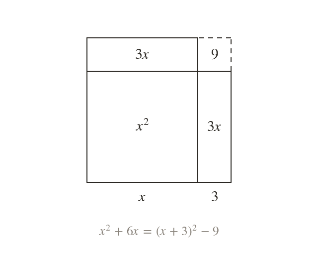
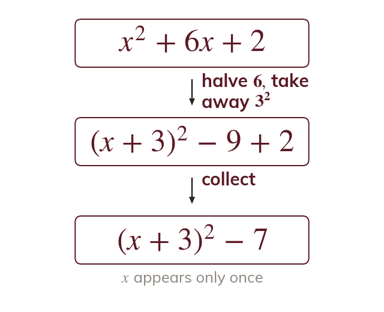
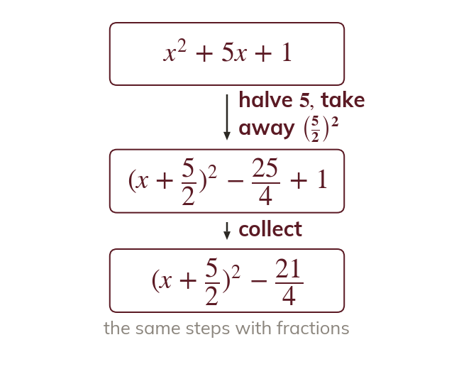
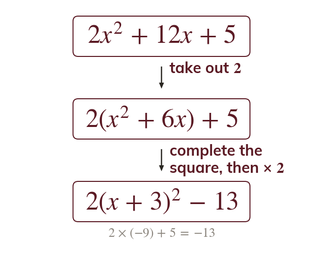
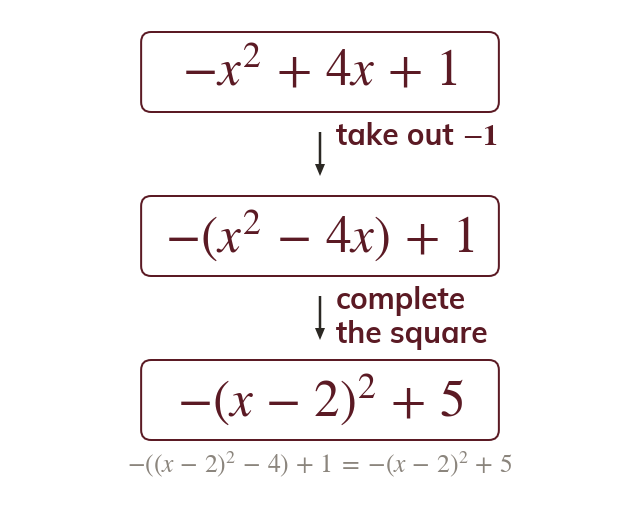
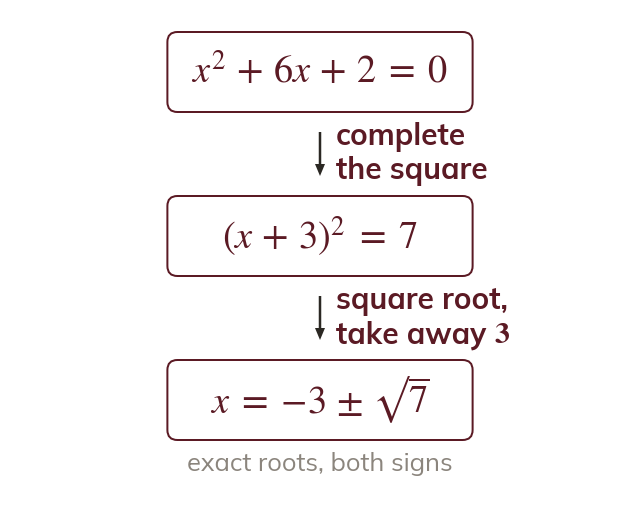

A square with a corner missing
The expression is an by square with a by strip cut in half and moved round it. The result is a square of side with a by corner missing.
Completing the square rewrites a quadratic so that x appears only once, inside a square. That one form gives exact solutions, proves the quadratic formula and, next lesson but one, reads off the turning point of a graph.
Work down the page at your own pace. Write every answer in your book first, then click to check it.
Read each card, then follow the worked examples one step at a time.

The expression is an by square with a by strip cut in half and moved round it. The result is a square of side with a by corner missing.

The bracket gives and an extra
So that extra square is taken away again.

When the coefficient of x is odd, half of it is a fraction. The method does not change.
Pick an answer. If it's wrong, the feedback tells you which mistake it was.
Write the blanks in your book first, then tap each one to check.
Read each card, then follow the worked examples one step at a time.

When the coefficient of is not take it out of the and terms only. Complete the square inside the bracket, then multiply back.

Taking out changes the sign of every term inside the bracket. The square then has a minus in front of it.

Once x appears only once, the equation can be undone step by step. Square root both sides and keep both signs.
Pick an answer. If it's wrong, the feedback tells you which mistake it was.
Write the blanks in your book first, then tap each one to check.
Finished? Next lesson: 2.3 Functions.
For each skill, tap the one that is true for you today. Your Revise pages start with anything you mark Not yet.
Your ratings are saved on this device only.
Log in, then search for a code to practise that skill.